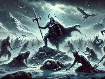
Ragnarökwiki-fr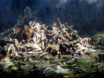
Délugewiki-sans-filtre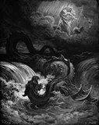
Armageddonwiki-sans-filtre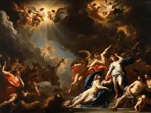
Jugement dernierwiki-sans-filtre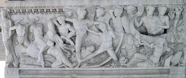
Guerre de Troiewiki-sans-filtre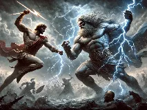
Titanomachiewiki-sans-filtre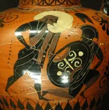
Gigantomachiewiki-sans-filtre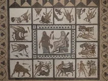
Travaux d'Héraclèswiki-sans-filtre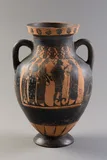
Jugement de Pâriswiki-sans-filtre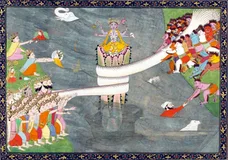
Barattage de la Mer de laitwiki-sans-filtre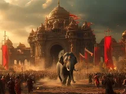
Bataille de Kurukshetrawiki-sans-filtre